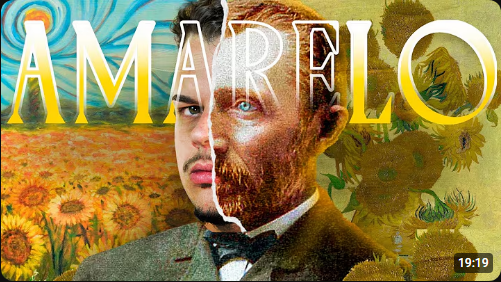

Todo esse projeto o trabalho teve como principal inspiração em um vídeo/documentário sobre Vincent Van Gogh, que está diponível no Youtube no canal "TinocandoTV" cujo link do canal e do vídeo está abaixo
Vincent van Gogh transformou radicalmente a história da arte ao converter a pintura em uma extensão direta da emoção humana, influenciando de forma profunda desde os movimentos de vanguarda do século XX, como o Expressionismo e o Fauvismo, até a cultura visual contemporânea. Sua coragem de romper com o realismo acadêmico por meio de pinceladas empastadas, dinâmicas e o uso vibrante e simbólico da cor ensinou gerações de artistas que a arte não precisa apenas retratar o mundo visível, mas sim traduzir estados de espírito, angústias e transcendência. Hoje, sua estética inconfundível transcende os quadros de museus e continua a ecoar no cinema, no design gráfico, na moda e em instalações imersivas multimídia, consolidando-o como um símbolo atemporal da paixão criativa e da vulnerabilidade artística
Video de Inspiração:
